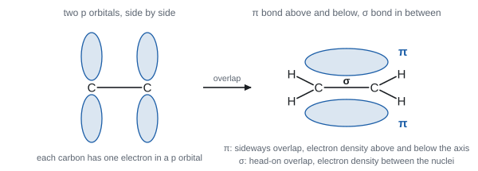
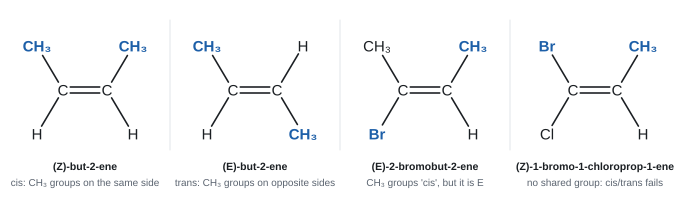
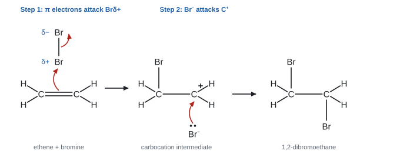
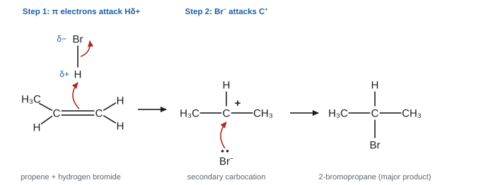
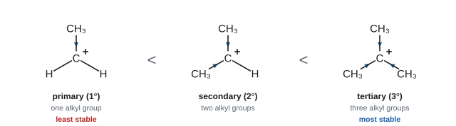
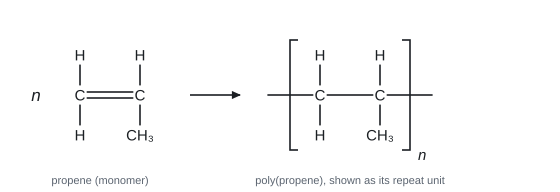

Alkenes
Alkenes contain a carbon–carbon double bond, and that one bond changes everything. It makes alkenes far more reactive than alkanes, it stops the molecule twisting (which creates a new kind of isomer), and it lets small molecules join into the long chains of addition polymers. This topic explains all three, starting from what a double bond actually is.
Spec5.1Alkenes: unsaturated hydrocarbons with σ and π bonds
Know the general formula of alkenes. Understand that alkenes and cycloalkenes are unsaturated hydrocarbons, with a C=C double bond made of one σ bond and one π bond.
Key facts
- Alkenes: hydrocarbons with one C=C double bond. General formula CₙH₂ₙ. Ethene C₂H₄, propene C₃H₆, butene C₄H₈.
- Cycloalkenes (a ring plus one C=C): CₙH₂ₙ₋₂. Cyclohexene C₆H₁₀.
- Unsaturated: the molecule contains a C=C double bond, so more atoms can be added across it.
- Around each carbon of the C=C there are three bonding regions, so the shape is trigonal planar, bond angle about 120°. The two carbons and the four atoms attached to them all lie in one plane.
What the double bond is made of
- σ (sigma) bond: formed by head-on (end-on) overlap of two orbitals, directly between the two nuclei. The electron density sits on the line between the nuclei. Every single bond is a σ bond.
- π (pi) bond: formed by sideways overlap of two p orbitals, one on each carbon. The electron density sits above and below the plane of the molecule, not between the nuclei.
- A C=C double bond = one σ bond + one π bond.

Why the π bond makes alkenes reactive
- The π electrons are further from the nuclei and exposed above and below the molecule, so they are easier to reach.
- The π bond is weaker than the σ bond. C=C (612 kJ mol⁻¹) is less than twice C–C (2 × 347 = 694 kJ mol⁻¹).
- The C=C is a region of high electron density, so it attracts electrophiles (5.6). In addition reactions the π bond breaks and the σ bond stays.
Worked example: counting σ and π bonds
Propene, CH₂=CHCH₃.
- 6 C–H bonds: 6 σ
- 1 C–C bond: 1 σ
- 1 C=C bond: 1 σ + 1 π
Total: 8 σ and 1 π.
Rule: every single bond is 1 σ; every double bond is 1 σ + 1 π.
- Drawing the π bond (Jan 2024): two regions of electron density (lobes), one above and one below the σ bond, and the σ bond shown between the nuclei.
- σ = "end-on / head-on overlap"; π = "sideways overlap of p orbitals".
Often asked as: describe or draw how a π bond forms; count σ and π bonds in an unfamiliar molecule (MCQ, Jan 2026); give a general formula (cycloalkene, Oct 2024).
Drawing the π bond in line with the σ bond, or as one lobe only (WCH11 Jan 2022 ER).
Drawing a single line for the σ bond with no indication of overlapping orbitals when the question asks for orbitals (WCH11 Jan 2024 ER).
Saying the π bond is "stronger" because a double bond is stronger. The double bond is stronger than a single bond, but the π part of it is weaker than the σ part.
Spec5.2Geometric (E/Z) isomerism
Explain geometric isomerism using restricted rotation about C=C and the nature of the groups on each carbon of the double bond.
Stereoisomers
Stereoisomers have the same structural formula (atoms joined in the same order) but a different arrangement of atoms in space. Geometric (E/Z or cis/trans) isomerism is one kind.
Two conditions, both needed
- Restricted rotation about the C=C. Rotating one end of a double bond would twist the p orbitals apart and break the π bond. That needs a lot of energy, so it doesn't happen at room temperature. (Around a C–C single bond, rotation is free, so alkanes don't form geometric isomers.)
- Two different groups on each carbon of the C=C. If either carbon carries two identical groups, swapping them changes nothing.
Check each C=C carbon
| Alkene | Groups on carbon 1 of C=C | Groups on carbon 2 of C=C | Geometric isomers? |
|---|---|---|---|
| propene CH₂=CHCH₃ | H, H | H, CH₃ | no (two H on one carbon) |
| but-1-ene CH₂=CHCH₂CH₃ | H, H | H, C₂H₅ | no |
| but-2-ene CH₃CH=CHCH₃ | H, CH₃ | H, CH₃ | yes |
| 2-methylpropene (CH₃)₂C=CH₂ | CH₃, CH₃ | H, H | no |
| 2-methylbut-2-ene (CH₃)₂C=CHCH₃ | CH₃, CH₃ | H, CH₃ | no |
| pent-2-ene CH₃CH=CHCH₂CH₃ | H, CH₃ | H, C₂H₅ | yes |
| 1,2-dichloroethene CHCl=CHCl | H, Cl | H, Cl | yes |
- Why isomers exist (Jan 2025, Oct 2025): "restricted rotation around the C=C" and "two different groups / atoms on each carbon of the double bond".
- Why no isomers (Oct 2020, isoprene): "each double bond has two hydrogen atoms on one carbon"; ALLOW "two identical groups / atoms attached to one carbon".
- The π bond prevents rotation; rotation would need the π bond to break.
Often asked as: explain why a named alkene has geometric isomers (2 marks); explain why another does not; draw both isomers.
"Similar groups" instead of different groups; "molecules" instead of groups or atoms (WCH11 Oct 2020, Jan 2024 ER).
"The double bond restricts rotation of the molecule" or "allows restricted rotation". Say: there is no rotation about the C=C bond (WCH11 Oct 2020, Jan 2024 ER).
Checking only one carbon of the C=C. Check both.
Molecules with several C=C bonds: test each double bond separately. Only C=C bonds with two different groups on both carbons give E/Z isomers. A molecule whose other C=C bonds each carry two identical groups has just two geometric isomers (WCH11 Jan 2021, α-farnesene; WCH11 Jan 2022, ocimene).
Spec5.3The E–Z naming system
Understand E–Z naming of geometric isomers, and why it is needed when cis/trans naming breaks down.
Cis/trans and its limit
- cis: two identical groups on the same side of the C=C. trans: on opposite sides.
- This only works when the two carbons share a group to compare (usually H or CH₃). If all four groups are different (e.g. CBrCl=CHCH₃), there is nothing to compare, so cis/trans can't be used. E/Z works for every case.
E/Z: the priority rules (Cahn–Ingold–Prelog)
- Look at each carbon of the C=C separately.
- Compare the two atoms directly attached to that carbon. The one with the higher atomic number has higher priority. (Br 35 > Cl 17 > O 8 > C 6 > H 1.)
- If the two attached atoms are the same (e.g. both C), list the atoms attached to each of them in order of atomic number and compare at the first point of difference.
- Z (zusammen, together): the two higher-priority groups are on the same side.
E (entgegen, opposite): the two higher-priority groups are on opposite sides.
Memory aid: Z = "Zame Zide".

Look at the left-hand carbon of the C=C. It carries Br and CH3. The atoms bonded directly to the carbon are Br (atomic number 35) and C (atomic number 6). Br has priority.
Look at the right-hand carbon. It carries CH3 and H: C (6) beats H (1), so CH3 has priority.
Both priority groups, Br and the right-hand CH3, are above the double bond: same side, so this is Z-2-bromobut-2-ene.
Notice that the two CH3 groups are on opposite sides, so anyone using cis/trans by comparing the methyl groups would call it "trans". That clash is why the E/Z system, which works for any groups, is the one to use.
Drawing E and Z isomers: the method
- Draw the C=C horizontally.
- Put the two groups on each carbon at about 120°: one up and one down on the left carbon, one up and one down on the right carbon.
- Mark the higher-priority group on each carbon.
- Both higher-priority groups up (or both down) → Z. One up, one down → E.
- To draw the other isomer, swap the two groups on one carbon only. Don't redraw the chain differently, or you may change the molecule.
Worked example: (Z)-3-methylpent-2-ene
Structure: CH₃CH=C(CH₃)CH₂CH₃. The C=C is between C2 and C3.
- C2 carries CH₃ and H. C beats H → CH₃ has priority.
- C3 carries CH₃ and CH₂CH₃. Both attach through C: a tie. Go one atom further. CH₃ has (H, H, H); CH₂CH₃ has (C, H, H). C beats H at the first difference → CH₂CH₃ has priority.
- Z: draw the CH₃ on C2 and the CH₂CH₃ on C3 on the same side.
Notice that in the Z isomer the two CH₃ groups are on opposite sides. Cis/trans by the methyls would give the wrong answer.
- Z (Jan 2021): "Z isomer has the highest priority groups on the same side of the C=C"; priority by atomic number, not mass.
- Trans (Jun 2024): "the two (identical) groups / alkyl groups are on opposite sides of the C=C". "Molecule" for "group" does not score.
- A full name has the E or Z, the position of the double bond, the stem and -ene (Jan 2024): (E)-pent-2-ene, not "pentene" or "E-pentene".
Often asked as: draw the Z isomer of a named alkene and explain why it is Z; name a drawn isomer; MCQ on E/Z.
Ranking groups by mass or by size instead of the atomic number of the first atom (WCH11 Jan 2021 ER).
Drawing the E isomer when Z was asked, or the same isomer twice in a different orientation (WCH11 Jan 2019, Oct 2019 ER).
Leaving out E/Z or the double-bond position in a name; "dimethylethene" for but-2-ene (WCH11 Jan 2024 ER).
In skeletal formulae, moving where the chain attaches when you swap groups (WCH11 Jan 2022 ER).
Spec5.4Reactions of alkenes
Describe these alkene reactions: (i) + hydrogen (nickel catalyst) → alkane; (ii) + halogen → dihalogenoalkane; (iii) + hydrogen halide → halogenoalkane; (iv) + steam (acid catalyst) → alcohol; (v) oxidation by acidified potassium manganate(VII) → diol.
The five reactions at a glance
| Reagent | Conditions | Ethene gives | Type |
|---|---|---|---|
| H₂ | nickel catalyst, about 150 °C (Pt or Pd also work) | ethane CH₃CH₃ | addition / reduction (hydrogenation) |
| Br₂ (or Cl₂) | room temperature; liquid bromine, bromine in an organic solvent, or bromine water | 1,2-dibromoethane CH₂BrCH₂Br | electrophilic addition |
| HBr (or HCl, HI) | room temperature, gaseous HBr | bromoethane CH₃CH₂Br | electrophilic addition |
| H₂O as steam | phosphoric(V) acid (H₃PO₄) catalyst; industrially about 300 °C and 60–70 atm | ethanol CH₃CH₂OH | addition (hydration) |
| KMnO₄ / H⁺ (acidified potassium manganate(VII)) | room temperature, shake | ethane-1,2-diol HOCH₂CH₂OH | oxidation |
Equations
| Reaction | Ethene | Propene |
|---|---|---|
| Hydrogenation | CH₂=CH₂ + H₂ → CH₃CH₃ | CH₂=CHCH₃ + H₂ → CH₃CH₂CH₃ (propane) |
| Halogen | CH₂=CH₂ + Br₂ → CH₂BrCH₂Br | CH₂=CHCH₃ + Br₂ → CH₂BrCHBrCH₃ (1,2-dibromopropane) |
| Hydrogen halide | CH₂=CH₂ + HBr → CH₃CH₂Br | CH₂=CHCH₃ + HBr → CH₃CHBrCH₃ (2-bromopropane, major) + CH₃CH₂CH₂Br (1-bromopropane, minor) |
| Steam | CH₂=CH₂ + H₂O → CH₃CH₂OH | CH₂=CHCH₃ + H₂O → CH₃CH(OH)CH₃ (propan-2-ol, major) + CH₃CH₂CH₂OH (propan-1-ol, minor) |
| KMnO₄ / H⁺ | CH₂=CH₂ + [O] + H₂O → HOCH₂CH₂OH | CH₂=CHCH₃ + [O] + H₂O → HOCH₂CH(OH)CH₃ (propane-1,2-diol) |
- [O] stands for oxygen from the oxidising agent. Use it to balance oxidation equations.
- With KMnO₄ you see purple → colourless. The two –OH groups go on the two carbons that were joined by the C=C (adjacent carbons).
- Hydrogenation is used to harden vegetable oils into margarine (it removes some C=C bonds).
- For an unsymmetrical alkene (propene) with HBr or steam, two products are possible. Which one is major is explained in 5.6.
Thinking it through with a cyclic alkene
Cyclohexene behaves the same way. With H₂/Ni → cyclohexane; with Br₂ → 1,2-dibromocyclohexane; with HBr → bromocyclohexane; with steam/H₃PO₄ → cyclohexanol; with KMnO₄/H⁺ → cyclohexane-1,2-diol. The ring stays; only the C=C changes.
Worked example: how many C=C bonds?
0.500 g of limonene, C₁₀H₁₆ (Mr 136.0), reacts completely with 176 cm³ of hydrogen at room temperature and pressure (molar volume 24.0 dm³ mol⁻¹).
n(limonene) = 0.500 ÷ 136.0 = 0.003676 mol
n(H₂) = 0.176 ÷ 24.0 = 0.007333 mol
Ratio H₂ : limonene = 0.007333 ÷ 0.003676 = 1.99 ≈ 2
One H₂ adds per C=C, so limonene has 2 C=C bonds. (Its formula, C₁₀H₁₆, is 6 H short of C₁₀H₂₂: two C=C plus one ring.)
Worked example: iodine number
The iodine number is the mass of I₂ (in g) that adds to 100 g of a fat or oil. One I₂ adds per C=C.
Triolein (Mr 885.4) has 3 C=C, so 1 mol adds 3 mol I₂ = 3 × 253.8 = 761.4 g.
Iodine number = 761.4 × 100 ÷ 885.4 = 86.0
Higher iodine number = more C=C = more unsaturated.
- Hydrogenation catalyst: "nickel" (ALLOW Pd, Pt, Rh). IGNORE heat. Acids or zeolite are wrong; a catalyst listed with other substances is not awarded (Oct 2025).
- Hydration (Jan 2026, 2 marks): "steam" (ALLOW H₂O(g), or water with a temperature above 100 °C; DO NOT AWARD water below 100 °C) and "phosphoric(V) acid / H₃PO₄" (ALLOW sulfuric acid, H⁺). A wrong extra reagent such as KMnO₄ caps the answer at 1. Ignore pressure.
- KMnO₄: "acidified potassium manganate(VII)"; product a diol with OH on adjacent carbons.
Often asked as: give reagents and conditions; name or draw the product from propene, a branched alkene or cyclohexene; calculate the number of C=C bonds from a volume of H₂ or a mass of I₂/Br₂.
Writing "phosphoric acid" without steam, or "water" without saying steam; giving "heat" or a temperature above 400 °C for hydration (WCH11 Jan 2020, Jan 2023 ER).
"K₂MnO₄" for potassium manganate(VII). It is KMnO₄; write the name if you're unsure (WCH11 Oct 2019 ER).
Putting both Br atoms or both OH groups on the same carbon; writing an alcohol instead of a diol; a 1,3-diol (WCH11 Jan 2022, Jan 2023 ER). Never bond Mn into the organic product.
"Butanol" with no position number (WCH11 Oct 2021 ER).
Forgetting to multiply by the number of C=C bonds in a moles calculation (WCH11 Jun 2022 ER).
Hydrogenation is not electrophilic addition (WCH11 Jan 2020).
Hydration of two different alkenes can give a set of positional isomers: pent-1-ene and pent-2-ene between them give pentan-1-ol, pentan-2-ol and pentan-3-ol (WCH11 Oct 2025).
Iodine-number and H₂-volume calculations to find the number of C=C bonds (WCH11 Jan 2026).
Spec5.5Testing for C=C
Know the test for a C=C double bond using bromine or bromine water.
The test
| Alkene (C=C present) | Alkane or cycloalkane (no C=C) | |
|---|---|---|
| Shake with bromine water at room temperature | orange → colourless | no change (stays orange) |
| Shake with acidified KMnO₄ | purple → colourless | no change (stays purple) |
- The bromine adds across the C=C (5.4), so the coloured Br₂ is used up.
- Alkanes don't react with bromine in the dark: their substitution reaction needs UV light (4.17).
- Do it without heating and in the dark (or at least not in strong sunlight), so a positive result can only come from addition.
- Gases such as propene can be bubbled through bromine water or shaken in a stoppered tube with it.
Suggested practical: comparing an alkane and an alkene
Use cyclohexane (an alkane) and cyclohexene (an alkene), a few drops of each.
- Bromine water: shake. Cyclohexene decolourises it (orange → colourless). Cyclohexane: no change.
- Acidified KMnO₄: shake. Cyclohexene: purple → colourless. Cyclohexane: stays purple.
- Combustion (a few drops on a watch glass, in a fume cupboard): both burn. Cyclohexene gives a smokier (sootier) flame because it has a higher ratio of carbon to hydrogen.
Other suggested practicals use the same test: cyclohexene made from cyclohexanol (heated with concentrated phosphoric(V) acid, then distilled off) and limonene extracted from orange peel by steam distillation both decolourise bromine water.
Safety: both liquids are flammable (no flames nearby except the controlled combustion test); bromine water is harmful.
- Bromine water test (Jun 2019): reagent "bromine water / bromine solution / Br₂(aq)"; observation "yellow / orange / (red-)brown → colourless". ALLOW "decolourises". IGNORE heat; adding an unnecessary condition such as UV negated the mark.
- Write "colourless", not "clear". Clear means see-through, and coloured solutions are clear too.
- A ring compound with no C=C: "no change / stays orange" (Oct 2025).
- Liquid bromine itself is red-brown (Oct 2020).
Often asked as: a test to distinguish propane from propene, with both observations; a test to show a compound from a reaction scheme is unsaturated.
"Bromine water goes clear" or "turns red". It is orange to colourless (WCH11 Oct 2019, Jan 2020, Jan 2021 ER).
Writing about two layers when the substances tested were gases (propane, propene) (WCH11 Oct 2019 ER).
Describing the product ("1,2-dibromopropane forms") when the question asks what you see (WCH11 Jan 2021 ER).
Spec5.6Electrophilic addition: mechanisms
Describe, with curly-arrow diagrams and evidence, the electrophilic addition of (i) bromine and hydrogen bromide to ethene and (ii) hydrogen bromide to propene. Arrows start from a bond or a lone pair. Know the relative stability of primary, secondary and tertiary carbocations.
Why "electrophilic addition"?
- The C=C is a region of high electron density (the π bond).
- An electrophile (electron-pair acceptor, 4.8) is attracted to it.
- The π electrons form a new bond to the electrophile, and two new single bonds end up where the double bond was: an addition.
Rules for every curly arrow
- A full curly arrow = movement of a pair of electrons.
- It starts at a bond (C=C, H–Br, Br–Br) or a lone pair. It ends at the atom that receives the electrons.
- Show δ+ / δ− on the electrophile, a full charge on the carbocation (+) and on the halide ion (−), and a lone pair on the halide ion.
Mechanism 1: bromine + ethene

- The dipole is induced. Br₂ is non-polar. As it approaches, the electron-rich C=C repels the electrons in the Br–Br bond, so the nearer Br becomes δ+ and the further Br δ−.
- Arrow 1 starts in the middle of the C=C and points to the Brδ+. The π electrons form a new C–Br bond.
- Arrow 2 starts on the Br–Br bond and points to the Brδ−. The Br–Br bond breaks heterolytically, giving Br⁻.
- Intermediate: one carbon now has the Br; the other carbon has lost its share of the π electrons, has only three bonds and is a carbocation (C⁺). Br⁻ is the other product of step 1.
- Arrow 3 starts at a lone pair on Br⁻ and points to the C⁺. A new C–Br bond forms.
- Product: CH₂BrCH₂Br, 1,2-dibromoethane.
The π bond induces a dipole in Br2: Brδ+–Brδ−.
A curly arrow from the π bond to Brδ+ shows the π electron pair forming a new C–Br bond. At the same time, a curly arrow from the Br–Br bond to Brδ− shows that bond breaking heterolytically: the far bromine leaves as a bromide ion, Br−.
That leaves a carbocation intermediate: the other carbon has lost its share of the π electrons and carries a positive charge.
A curly arrow from a lone pair on Br− to C+ shows the bromide ion forming the second C–Br bond. The product is 1,2-dibromoethane, CH2BrCH2Br.
Exam answers need: the δ+ and δ− on Br2, the arrow from the π bond (the middle of the C=C), the arrow from the Br–Br bond, the structure of the carbocation with its + charge, a lone pair on Br− with the final arrow starting from it.
Mechanism 2: hydrogen bromide + ethene
HBr is already polar: Br is more electronegative, so it is Hδ+–Brδ−. The pattern is the same as for Br₂:
- Arrow 1: from the C=C to the Hδ+.
- Arrow 2: from the H–Br bond to the Brδ− (heterolytic fission, giving Br⁻).
- Intermediate: CH₃CH₂⁺ (a primary carbocation) and Br⁻.
- Arrow 3: from a lone pair on Br⁻ to the C⁺.
- Product: CH₃CH₂Br, bromoethane.
Ethene is symmetrical, so it doesn't matter which carbon gets the H: there is only one product.
Mechanism 3: hydrogen bromide + propene

Propene is unsymmetrical, so the H can add to either carbon of the C=C:
| H adds to | Carbocation formed | Type | Product |
|---|---|---|---|
| the end carbon (CH₂) | CH₃–C⁺H–CH₃ | secondary (2°): C⁺ joined to two alkyl groups | 2-bromopropane (major) |
| the middle carbon (CH) | CH₃–CH₂–C⁺H₂ | primary (1°): C⁺ joined to one alkyl group | 1-bromopropane (minor) |
The arrows are drawn exactly as for ethene. Make sure your intermediate is the secondary carbocation if you are asked for the major product.
Why the secondary carbocation wins

- Alkyl groups are electron-releasing: they push electron density towards the positively charged carbon (a positive inductive effect).
- This spreads out (stabilises) the positive charge. The more alkyl groups attached to C⁺, the more stable the carbocation.
- Stability: tertiary (3°) > secondary (2°) > primary (1°).
- The more stable carbocation forms more easily (lower activation energy), so most of the product comes from it. That product is the major product.
The same reasoning predicts any unsymmetrical case. 2-methylpropene + HBr goes mostly through the tertiary carbocation (CH₃)₃C⁺, giving 2-bromo-2-methylpropane as the major product.
Major product = the one formed from the more stable carbocation intermediate. Compare the intermediates, not the products.
Evidence for the mechanism
- A carbocation intermediate is attacked by whatever nucleophile is around. Ethene + bromine in the presence of chloride ions (NaCl solution) gives 1-bromo-2-chloroethane as well as 1,2-dibromoethane, but no 1,2-dichloroethane. So the first step always adds a Br atom (the Brδ+ end of Br₂), and the second step adds whichever negative ion reaches the C⁺ first.
- With bromine water, water molecules also attack the carbocation, and the main product is 2-bromoethanol (BrCH₂CH₂OH).
- With propene, HBr gives mostly 2-bromopropane. That matches the prediction from carbocation stability.
Unsymmetrical electrophiles
Work out which end is δ+ using electronegativity. The δ+ atom adds first (it is the electrophile); the δ− atom ends up on the carbocation carbon.
| Electrophile | Dipole | With propene, major product |
|---|---|---|
| HBr | Hδ+–Brδ− | 2-bromopropane, CH₃CHBrCH₃ |
| BrCl | Brδ+–Clδ− (Cl more electronegative) | 1-bromo-2-chloropropane, CH₃CHClCH₂Br |
| ICl | Iδ+–Clδ− | 2-chloro-1-iodopropane, CH₃CHClCH₂I |
| H₂SO₄ | Hδ+ on an O–H bond | propyl hydrogensulfate, CH₃CH(OSO₃H)CH₃ |
In each case the δ+ atom bonds to the CH₂ end, so the C⁺ is on the middle carbon (secondary).
- HBr mechanism (Jan 2023, 4 marks, six points): dipole on H–Br; arrow from the H–Br bond to Br; curly arrow from the C=C to Hδ+; correct carbocation; arrow from a lone pair on Br⁻ to C⁺; charge on bromide. Marks go by how many of these points you include, so leave none out.
- Br₂ mechanism (Jan 2019): induced dipole on Br–Br; one arrow from C=C to Brδ+; one from the Br–Br bond to (or just beyond) Brδ−; intermediate; lone pair on Br⁻ with the arrow from it to C⁺. IGNORE bond angles. Incorrect partial charges are penalised.
- Stability (Jan 2023, 2 marks): "the product is formed from the secondary carbocation (intermediate)" and "the secondary carbocation is more stable than the primary". Oct 2022: "the tertiary carbocation is more stable than the primary"; ALLOW "three methyl groups attached to the positive C". IGNORE Markovnikov's rule.
- BrCl: dipole Brδ+–Clδ− (Jan 2021); ICl: Iδ+ (Jun 2021).
Often asked as: the full mechanism for a named alkene (ethene, propene, 2-methylpropene, cyclohexene, a cyclic alkene); identify the carbocation intermediate; explain why one product is major; spot and correct errors in a given mechanism.
Arrows starting from an atom or from a charge instead of from the bond or the lone pair; arrows pointing the wrong way. This is in every examiner report from 2019 to 2024.
No dipole on HBr or Br₂, or δ+ on the wrong atom (WCH11 Jan 2019, Oct 2019, Jan 2021 ER).
Writing Brδ− in step 2 instead of a full Br⁻ charge with a lone pair (WCH11 Oct 2020, Jan 2021, Oct 2022, Jan 2024 ER).
Using ethene when the question names a different alkene (WCH11 Jan 2019, Jan 2023, Oct 2023 ER). Practise with several alkenes.
Using HBr when bromine was asked, or the other way round (WCH11 Jan 2019 ER).
Drawing the primary carbocation when the major product comes from the secondary (WCH11 Jun 2022, Oct 2022 ER).
"2-bromopropane is a secondary carbocation", "secondary halogenoalkanes are more stable", or comparing the stability of the products: it is the intermediate carbocations you compare (WCH11 Jan 2023, Oct 2023, Oct 2024 ER).
Quoting Markovnikov's rule instead of explaining carbocation stability. The rule is not on the spec and earns nothing by itself (WCH11 Jan 2023 ER).
Unsymmetrical electrophiles: BrCl (WCH11 Jan 2021), ICl (WCH11 Jun 2021), and H₂SO₄ adding to an alkene. For H₂SO₄: arrow from C=C to the H of an O–H; arrow from that O–H bond to O; carbocation + HSO₄⁻; lone pair on the O⁻ of HSO₄⁻ to C⁺ (WCH11 Oct 2024, nine-point scheme).
Acid-catalysed hydration of propene: arrow from C=C to H⁺; secondary carbocation; arrow from a lone pair on the O of H₂O to C⁺; the O then loses H⁺, giving propan-2-ol and regenerating H⁺ (the catalyst) (WCH11 Jan 2021).
How the π electrons induce a dipole in Cl₂ or Br₂ (WCH11 Jan 2025).
Correcting a wrong mechanism: reverse the dipole on Br₂; start the arrow at the π bond; give Br⁻ a lone pair and charge (WCH11 Oct 2019).
The π bond attacks H+. H adds to the end carbon, giving the more stable secondary carbocation, CH3C+HCH3.
A lone pair on the oxygen of a water molecule forms a bond to C+. The oxygen now has three bonds and carries the positive charge.
An O–H bond breaks, with both electrons going to the oxygen, and H+ is released. The product is propan-2-ol and the catalyst is regenerated.
\[ \mathrm{CH_2{=}CHCH_3 + H_2O \xrightarrow{H^+} CH_3CH(OH)CH_3} \]Spec5.7Addition polymerisation
Describe the addition polymerisation of alkenes. Draw the repeat unit from the monomer, and the monomer from the repeat unit.
What happens
- Monomers: small molecules with a C=C.
- Under suitable conditions (high pressure and an initiator, or a catalyst) the π bond in each monomer breaks and the monomers join into a long saturated chain: the polymer.
- The polymer is the only product (atom economy 100%).
- The polymer chain has no C=C left. It is saturated and very unreactive, like an alkane.

Monomer → repeat unit
- Draw the monomer with the C=C horizontal and the other four groups above and below (not along the line).
- Change the C=C to a C–C single bond.
- Add an extension bond to the left of the first carbon and to the right of the second.
- Put square brackets across the extension bonds and write n at the bottom right.
- For the equation, write n in front of the monomer too.
n CH₂=CHCH₃ → –[CH₂–CH(CH₃)]–ₙ
The repeat unit's main chain is always just two carbons (from a monomer with one C=C). Everything else hangs off as side groups.
Repeat unit → monomer
- Take the two main-chain carbons inside the brackets.
- Remove the extension bonds and the brackets.
- Put a C=C between those two carbons. Keep the side groups.
Common addition polymers
| Monomer | Polymer | Repeat unit |
|---|---|---|
| ethene CH₂=CH₂ | poly(ethene) | –[CH₂–CH₂]– |
| propene CH₂=CHCH₃ | poly(propene) | –[CH₂–CH(CH₃)]– |
| chloroethene CH₂=CHCl | poly(chloroethene), PVC | –[CH₂–CHCl]– |
| tetrafluoroethene CF₂=CF₂ | poly(tetrafluoroethene), PTFE | –[CF₂–CF₂]– |
| phenylethene CH₂=CHC₆H₅ | poly(phenylethene), polystyrene | –[CH₂–CH(C₆H₅)]– |
| but-1-ene CH₂=CHCH₂CH₃ | poly(but-1-ene) | –[CH₂–CH(C₂H₅)]– |
| but-2-ene CH₃CH=CHCH₃ | poly(but-2-ene) | –[CH(CH₃)–CH(CH₃)]– |
| methyl 2-methylpropenoate CH₂=C(CH₃)COOCH₃ | Perspex | –[CH₂–C(CH₃)(COOCH₃)]– |
Worked example: number of repeat units
A sample of poly(propene) has an average Mr of 210 000.
Repeat unit C₃H₆: Mr = (3 × 12.0) + (6 × 1.0) = 42.0
Number of repeat units = 210 000 ÷ 42.0 = 5000
"Draw two repeat units" means four main-chain carbons in one continuous chain, with extension bonds at each end. Two separate bracketed units, or one, or three, don't score (WCH11 Jan 2019).
- Repeat unit (Jan 2026): "diagram showing extension bonds"; ALLOW CH₃ written as a group; DO NOT AWARD missing H or a skeletal formula.
- Equation (Jun 2019): n before the monomer and after the polymer brackets; "the equation must be balanced".
- Polymer is saturated: no C=C in the repeat unit (Oct 2021 ER).
- Addition v condensation (Oct 2020): poly(lactic acid) is a condensation polymer that gives off a small molecule (water); propene polymerisation gives no other product (addition). ALLOW "higher atom economy".
Often asked as: draw the repeat unit (propene, but-1-ene, chloroethene, tetrafluoroethene); draw two repeat units; deduce the monomer from a polymer section; write the equation with n.
Three carbons in the main chain (e.g. putting the CH₃ of propene into the backbone); leaving out the CH₃; keeping the C=C in the repeat unit (WCH11 Jan 2021, Oct 2021 ER).
Drawing poly(ethene) or poly(but-2-ene) when but-1-ene was asked (WCH11 Oct 2021 ER).
Missing n on one side; extension bonds that don't pass through the brackets (WCH11 Oct 2020, Jun 2019, Jan 2023 ER).
Saying propene polymerisation "produces hydrogen". Addition polymerisation produces nothing else (WCH11 Oct 2020 ER).
Drawing trifluoroethene for tetrafluoroethene: tetra = four F (WCH11 Jun 2024).
Monomers with two C=C bonds (dienes). Buta-1,3-diene, CH₂=CH–CH=CH₂, polymerises to a repeat unit with four main-chain carbons and a C=C in the middle: –[CH₂–CH=CH–CH₂]–. Working backwards, a repeat unit with a C=C inside the chain came from a monomer with two C=C bonds (WCH11 Oct 2023, Oct 2022).
Mr of a repeat unit and the number of repeat units in a chain (WCH11 Oct 2023).
Why polymers suit some uses: low density, don't corrode, don't release metal ions into water (WCH11 Jan 2025).
Spec5.8Dealing with polymer waste
Understand how chemists reduce the problems of polymer disposal by (i) developing biodegradable polymers and (ii) removing toxic waste gases produced when polymers are burned.
The problem
- Addition polymers have strong, non-polar C–C and C–H bonds and no reactive functional group, so microorganisms' enzymes can't break them down. They are non-biodegradable and last for hundreds of years.
- Landfill: takes up land; plastics persist; litter harms wildlife.
- Incineration: releases energy (which can generate electricity) and takes little space, but makes CO₂ and toxic gases. Burning PVC releases hydrogen chloride, HCl. Incomplete burning also makes CO and soot.
What chemists do
(i) Develop biodegradable polymers
- A biodegradable polymer is broken down by microorganisms (bacteria, fungi) into harmless products such as CO₂, water and biomass.
- Examples: poly(lactic acid), PLA, made from plant starch (corn, sugar cane). It is a condensation polymer with ester links that can be hydrolysed. Starch-based plastics and compostable bags.
- Benefits: less waste to landfill; less litter and harm to wildlife; no need to incinerate; often made from renewable plant material rather than crude oil.
- Limits: needs the right conditions (moisture, warmth, microbes) to break down; uses farmland; may still release CO₂ or methane as it decomposes.
(ii) Remove toxic gases from incinerator waste
- The waste gases are passed through scrubbers containing a base, which neutralises acidic gases such as HCl and SO₂.
- CaO(s) + 2HCl(g) → CaCl₂(s) + H₂O(l)
- Ca(OH)₂ + 2HCl → CaCl₂ + 2H₂O
- CaCO₃ + 2HCl → CaCl₂ + H₂O + CO₂
- A large surface area (spraying a slurry of the base, or a fine powder) speeds up the reaction.
- HCl is also very soluble, so water sprays help to remove it.
Other approaches
- Recycling: sorting, melting and remoulding thermoplastics (saves crude oil and energy).
- Feedstock recycling: cracking waste polymers back into small molecules (monomers, fuels) to make new chemicals.
- Energy recovery: burning to generate electricity, with the gases cleaned.
- Biodegradable (Oct 2020), three of: takes less time to break down; reduces waste to landfill; no need to incinerate; reduces litter / harm to wildlife; breaks down to non-harmful products; made from renewable sources / conserves crude oil. DO NOT AWARD "no waste", "no pollution". "Biodegradable" means broken down by microorganisms; "breaks down naturally" alone did not score.
- Incineration (Oct 2021, Jan 2023, Jun 2024): advantages: energy released to generate electricity or heat; less space than landfill; pollutants can be trapped. Disadvantages: toxic / corrosive gases (name HCl from PVC); particulates; not all polymers can be recycled.
- Removing HCl (Jun 2019, Oct 2023): neutralise with a base, e.g. calcium hydroxide or calcium oxide; a large surface area increases the rate. "Scrubbers" alone isn't enough.
- Chemists limit the problem by (Oct 2022): developing biodegradable polymers; removing toxic waste gases from incineration; converting waste polymers into useful feedstock.
Often asked as: advantages and disadvantages of incineration and landfill; what biodegradable means and why it helps; how HCl is removed from incinerator gases, with an equation.
Describing what the public should do (reuse, recycle bins) when the question asks what chemists do (WCH11 Oct 2022 ER).
Saying incineration "uses" a lot of energy: it releases energy (WCH11 Oct 2021 ER).
Confusing biodegradable with recyclable. Non-biodegradable polymers can be recycled too (WCH11 Oct 2020 ER).
Mentioning CO₂ and global warming when the question says not to (WCH11 Oct 2021 ER).
Suggesting a catalytic converter to remove HCl (WCH11 Jun 2019 ER). Use a base.
Poly(lactic acid) as a condensation polymer compared with poly(propene) (WCH11 Oct 2020).
Landfill gas: anaerobic decay makes methane and CO₂ (WCH11 Jun 2022).
Quick checks
Which statement about the C=C bond in ethene is correct?
A double bond is one σ bond plus one π bond. The π bond comes from sideways overlap of p orbitals above and below the plane, which is less effective than end-on overlap, so it is weaker (612 is less than 2 × 347 kJ mol−1). It prevents rotation rather than allowing it.
Which compound has E/Z isomers?
In pent-2-ene each carbon of the C=C carries two different groups (H and CH3; H and C2H5). In each of the others, one carbon of the C=C carries two identical groups.
In CHBr=CHCl, the Br and the Cl are on opposite sides of the double bond. What is the isomer?
On each carbon the halogen beats H (35 or 17 against 1), so Br and Cl are the priority groups. Opposite sides means E. Cis–trans would struggle here, but E/Z works for any groups.
What is the major product when hydrogen bromide reacts with 2-methylpropene, (CH3)2C=CH2?
H adding to the CH2 carbon leaves a tertiary carbocation, (CH3)3C+, stabilised by three electron-releasing methyl groups. Br− adds to that carbon. The other route goes through a much less stable primary carbocation and gives the minor product, 1-bromo-2-methylpropane.
In the mechanism of the reaction between ethene and bromine, where does the first curly arrow start?
The π electrons are the electron source: they move to form a bond to Brδ+. The arrow from the Br–Br bond is the second arrow, showing heterolytic fission. A lone pair on Br− is used only in the final step, when the bromide ion attacks the carbocation.
Which reagent and observation show that hex-1-ene is unsaturated?
Bromine adds across the C=C, so the orange colour of the bromine disappears. Manganate(VII) also works, but it starts purple and is decolourised, not the other way round.
Which is the repeat unit of the polymer made from chloroethene, CH2=CHCl?
The repeat unit is just two backbone carbons with the original four atoms (three H, one Cl) still attached, and the double bond has become single. The first option shows two repeat units, the third keeps a double bond, and the last puts the Cl in the chain.
Why can burning waste PVC in an incinerator be a problem, and how is it dealt with?
PVC contains chlorine, which ends up as acidic, toxic HCl gas when it burns. Passing the waste gases through a base neutralises it: CaO + 2HCl → CaCl2 + H2O.